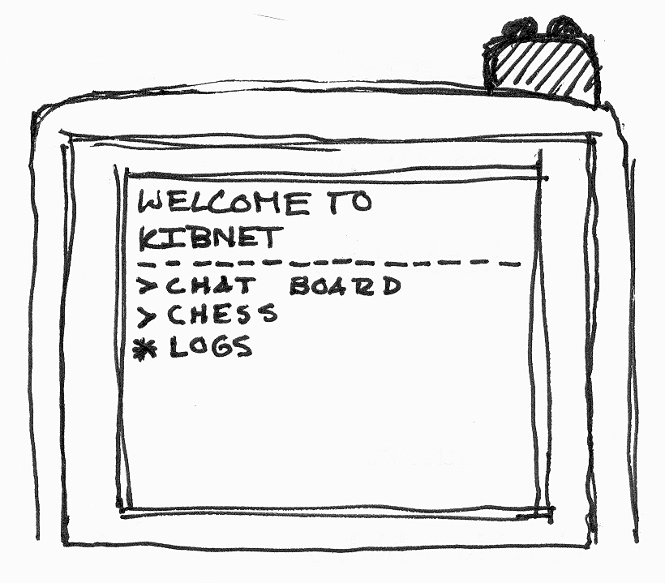
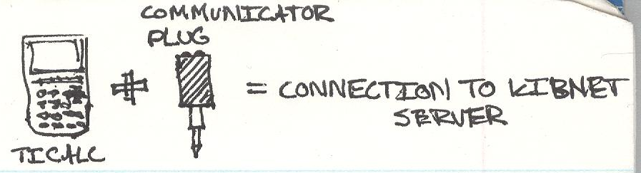
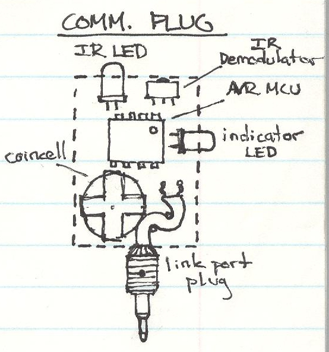
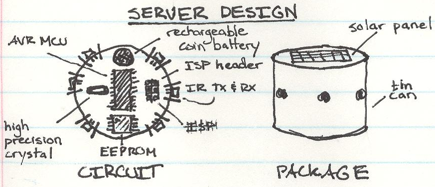
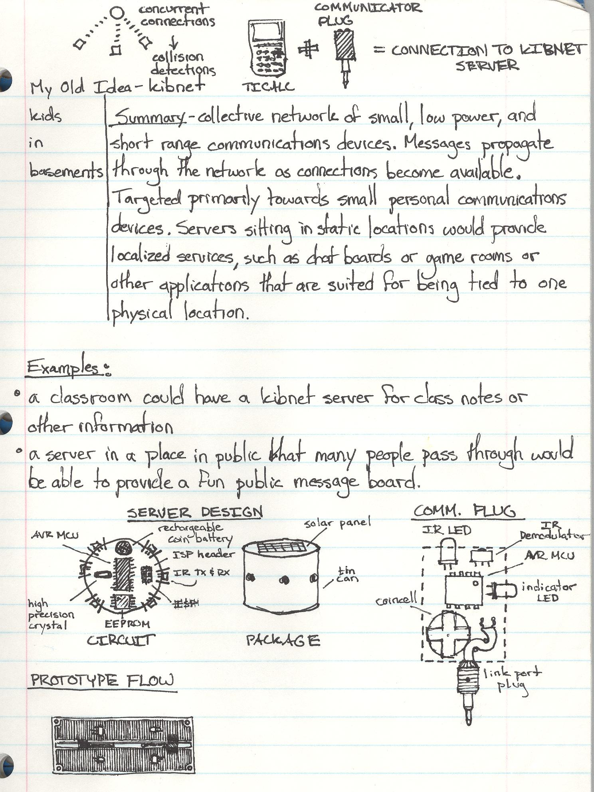

In high school I had this idea for a physical social network. Every participant would have a hardware device that let them connect to the network. It wouldn't use the Internet - devices would communicate peer-to-peer and distribute messages opportunistically when people with the devices passed near enough to each other in real life.

A unique and silly feature of the idea was that the devices would be based on the TI graphing calculators that all students had to have. The thinking being that it would reduce the cost of the device, because it would just plug into the calculator and provide the smarts for communicating with the network while the calculator would provide the interface and run a lot of the complex code.



To improve the network I thought about making small server boxes that could act as network hubs. The devices of people passing by would drop off some messages and pick some up and hopefully that would boost the likelihood that a given message would reach the intended participant.
I never built the system but wish that I had because even looking back on it now more than a decade later it seems like a good idea even if no one would have used it except for me and my friends. There were plenty of mistakes in the concept, like doing the networking with infrared, but all of them could be readily fixed.

Done in high school